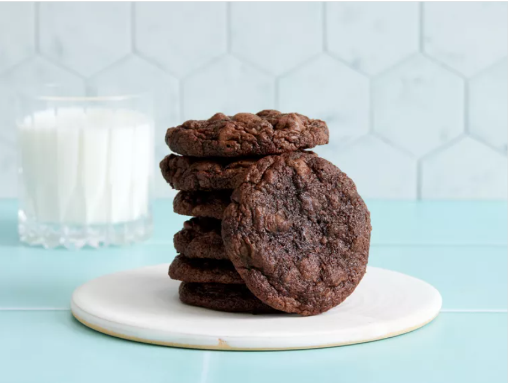

Home
Double Chocolate Chip Cookie Recipe

Description
Get a double dose of chocolate in every bite with these classic double chocolate chip cookies. No surprises here, these are the real deal! A gloriously soft and chewy chocolate chip cookie made with the addition of cocoa powder for extra chocolaty goodness.
Ingredients:
- 1 cup margarine, softened
- 1 cup white sugar
- 1 cup brown sugar
- 2 eggs
- 1 teaspoon vanilla extract
- 2 cups all-purpose flour
- 1 teaspoon baking soda
- 1 teaspoon salt
- ⅓ cup unsweetened cocoa powder
- 3 cups semisweet chocolate chips
Steps
- Gather all ingredients. Preheat the oven to 375 degrees F (190 degrees C). Grease cookie sheets.
- In a medium bowl, cream together the margarine, white sugar, and brown sugar until smooth. Beat in the eggs one at a time, then stir in the vanilla.
- Sift in the flour, baking soda, salt, and cocoa powder; mix well. Stir in the chocolate chips
- Roll tablespoonfuls of cookie dough into balls and place them 1 inch apart onto the prepared cookie sheets.
- Bake for 8 to 10 minutes in the preheated oven. Allow cookies to cool on baking sheet for 2 minutes before removing to a wire rack to cool completely.